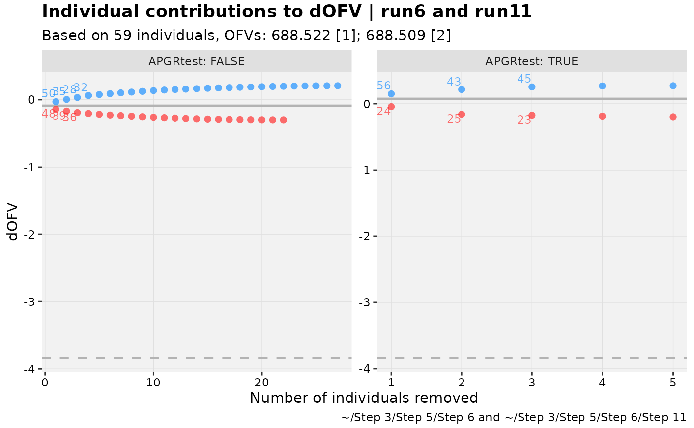

This is intended to match the overall behavior of
dOFV.vs.id() in xpose4, within the framework
of the xpose_set object.
dofv_vs_id is an alias of the function shark_plot,
for recognition.
Usage
shark_plot(
xpdb_s,
...,
.inorder = FALSE,
type = "plt",
alpha = 0.05,
df = "guess",
text_cutoff = 0.8,
title = "Individual contributions to dOFV | @run",
subtitle = "Based on @nind individuals, OFVs: @ofv",
caption = "@dir",
tag = NULL,
ylab = "dOFV",
xlab = "Number of individuals removed",
opt,
facets = NULL,
.problem,
.subprob,
.method,
quiet
)
dofv_vs_id(
xpdb_s,
...,
.inorder = FALSE,
type = "plt",
alpha = 0.05,
df = "guess",
text_cutoff = 0.8,
title = "Individual contributions to dOFV | @run",
subtitle = "Based on @nind individuals, OFVs: @ofv",
caption = "@dir",
tag = NULL,
ylab = "dOFV",
xlab = "Number of individuals removed",
opt,
facets = NULL,
.problem,
.subprob,
.method,
quiet
)Arguments
- xpdb_s
<
xpose_set> object- ...
See <
two_set_dots>- .inorder
See <
two_set_dots>- type
See Details.
- alpha
alpha for LRT
- df
degrees of freedom for LRT. If
"guess"(default), then use the difference in the number of unfixed parameters.- text_cutoff
If less than 1, the percentile of absolute individual dOFV values above which to show labels of IDs. If above 1, the absolute number of IDs to show. To show all, use an extreme positive number like 9999.
- title
Plot title
- subtitle
Plot subtitle
- caption
Plot caption
- tag
Plot tag
- ylab
y-axis label
- xlab
x-axis label
- opt
User-specified data options. Only some of these will be used.
- facets
<
character> vector selecting facets, orNULL(default).- .problem
The problem to be used, by default returns the last one.
- .subprob
The subproblem to be used, by default returns the last one.
- .method
The estimation method to be used, by default returns the last one.
- quiet
Silence extra debugging output
Details
For type-based customization of plots:
ppoints (using aesthetics forsharkupandsharkdn)llines for dOFV (both total dOFV and significance are plotted)ttext (using aesthetics forshkuptxtandshkdntxt)
In xpose4, users can control sig.drop, but this function uses
alpha and df to determine the critical delta by the likelihood
ratio test. It is acknowledged there are situations where this may
not be valid, but it is suggested that df or alpha be adjusted
to meet the desired sig.drop.
my_alpha <- 0.05
my_df <- 1.34 # fractional, perhaps to account for different IIVs
my_sigdrop <- -stats::qchisq(1-my_alpha, my_df)
my_sigdrop
#> [1] -4.633671
# Then use alpha=my_alpha, df=my_df in `shark_plot` call.Examples
# \donttest{
pheno_set %>%
# Make sure set has iofv var types defined
focus_xpdb(everything()) %>%
focus_function(backfill_iofv) %>%
# Pick two models or consistent with two_set_dots()
shark_plot(run6,run11)
#> Using data from $prob no.1
#> Removing duplicated rows based on: ID
#> Returning parameter estimates from $prob no.1, subprob no.1, method foce
#> Returning parameter estimates from $prob no.1, subprob no.1, method foce
pheno_set %>%
# As before
focus_xpdb(everything()) %>%
focus_function(backfill_iofv) %>%
# Add indicator (or use established covariate)
mutate(APGRtest = as.numeric(as.character(APGR))<5) %>%
# Pick two models or consistent with two_set_dots()
shark_plot(run6,run11, facets = "APGRtest")
#> Using data from $prob no.1
#> Removing duplicated rows based on: ID, APGRtest
#> Returning parameter estimates from $prob no.1, subprob no.1, method foce
#> Returning parameter estimates from $prob no.1, subprob no.1, method foce

# }